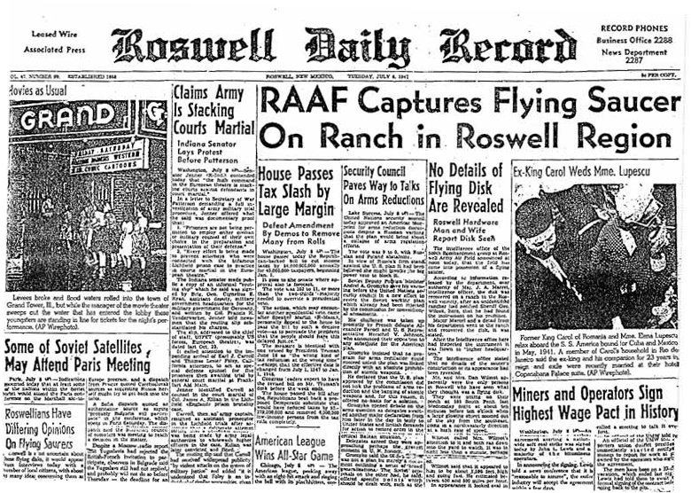

Casos Investigados
Incidente de varginha
Na madrugada do dia 20 de janeiro de 1996, a pacata cidade de Varginha, em Minas Gerais, entrou para a história como palco de um dos eventos ufológicos mais polêmicos e misteriosos do mundo. O que começou como um relato de três garotas assustadas logo se transformaria em uma das maiores teorias da conspiração do Brasil.

As jovens Liliane, Valquíria e Kátia afirmaram ter visto uma criatura com cerca de 1,60m, pele marrom, olhos vermelhos grandes, cabeça desproporcional e três protuberâncias na testa. O ser parecia debilitado e emitia sons estranhos. O local do avistamento? Um terreno baldio no bairro Jardim Andere. Elas correram, desesperadas. Mas o que viria depois seria ainda mais assustador. Nos dias seguintes, moradores começaram a notar uma movimentação anormal: militares do Exército e bombeiros cercaram áreas específicas da cidade, helicópteros sobrevoavam bairros residenciais, e caminhões militares entravam e saíam com frequência incomum. De acordo com testemunhas, ao menos duas criaturas não humanas foram capturadas — uma delas ainda viva.
Segundo teorias populares, os seres teriam sido levados para o Hospital Regional de Varginha, depois transportados para unidades militares em Campinas e, possivelmente, até para os Estados Unidos. O mais sinistro: relatos indicam que uma dessas criaturas morreu durante os procedimentos, e um policial militar, Marco Eli Chereze, que teve contato direto com ela, também faleceu dias depois por infecção generalizada — o que muitos acreditam ter sido causado por uma substância desconhecida. A versão oficial das Forças Armadas? Nada aconteceu. O Exército declarou que tudo não passou de um mal-entendido: o "ET" seria na verdade um morador com deficiência mental, sujo de lama, e a movimentação militar seria apenas treinamento de rotina. Mas para ufólogos e teóricos da conspiração, isso foi apenas o começo de um grande encobrimento orquestrado.
O caso é cercado de silêncios, contradições e documentos sumidos. Testemunhas que falaram abertamente à imprensa recuaram misteriosamente. Funcionários do hospital foram orientados a manter segredo. Muitos apontam que houve interferência de agências estrangeiras, como a CIA e o FBI, que teriam orientado o Exército brasileiro a manter tudo em sigilo. Desde então, o Caso Varginha virou símbolo da ufologia brasileira, rendendo livros, investigações independentes, conferências e até um documentário internacional de peso: "Moment of Contact" (2022), do cineasta James Fox, que trouxe novas entrevistas e supostos vazamentos que reforçam a ideia de que o governo brasileiro escondeu um contato extraterrestre real.
Mas afinal... Por que o Exército teria aparecido tão rápido? Como tantas testemunhas deram versões similares sem se conhecerem? O que realmente aconteceu com Marco Chereze? E por que, quase 30 anos depois, ainda não temos uma explicação clara?
Para muitos, o Caso Varginha é o nosso "Roswell brasileiro", com todos os ingredientes para um mistério de verdade: encobrimento militar, criaturas de outro mundo, mortes suspeitas e um silêncio que fala alto demais.
Afinal, se nada aconteceu... por que esconder tanto?
Saiba mais.Caso Roswell
Em 8 de julho de 1947, o jornal local Roswell Daily Record estampava na primeira página: “RAAF captura disco voador em rancho na região de Roswell.” A manchete causou alvoroço. No entanto, menos de 24 horas depois, a Força Aérea recuou: tratava-se, segundo eles, de um mero balão meteorológico.
Mas a sequência dos fatos levanta mais perguntas do que respostas

Testemunhas afirmam que os destroços recuperados por militares apresentavam propriedades incomuns — materiais metálicos que retornavam à forma original após serem dobrados, sem sinais de desgaste, calor ou ferrugem. Alguns relataram símbolos desconhecidos gravados nas peças, semelhantes a hieróglifos. Há também relatos não confirmados sobre a recuperação de corpos — seres de baixa estatura, pele acinzentada e crânios desproporcionais.
Documentos desclassificados nas décadas seguintes revelaram a existência do Projeto Mogul — uma operação secreta da Força Aérea que utilizava balões de alta altitude para monitoramento nuclear. O governo sustenta que foi isso que caiu em Roswell. No entanto, especialistas questionam: por que tanto sigilo? Por que isolar a área com tamanho rigor e ameaçar civis com silêncio absoluto?
A cada década, novas evidências, depoimentos e investigações reacendem o caso. Roswell se tornou o ponto zero da ufologia moderna — não apenas por causa da possível presença extraterrestre, mas pelo padrão de ocultação, desinformação e manipulação de informações que se seguiu. Afinal, o que de fato caiu no deserto do Novo México naquela noite de 1947?

Talvez nunca saibamos a verdade completa — ou talvez ela esteja oculta, cuidadosamente enterrada sob décadas de sigilo, desinformação e convenientes versões oficiais. O Caso Roswell não é apenas um mistério sobre algo que caiu do céu, mas sobre como as instituições reagem diante do desconhecido. Quando até os fatos são classificados, resta-nos apenas investigar nas entrelinhas. E a pergunta permanece no ar, inquieta como as luzes que muitos dizem ter visto: á que estamos realmente sozinhos... ou apenas sendo mantidos no escuro?
Saiba mais.